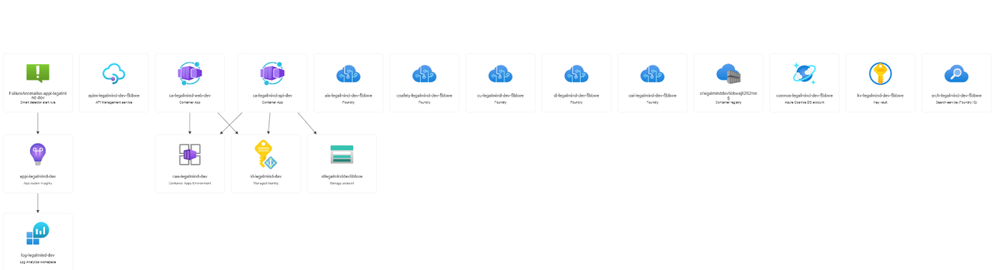

TL;DR — I had a forty-page design for an AI legal assistant and a brand-new Azure subscription. Getting to a working URL took one long day and taught me that the design document had been confidently wrong about models, quota, regions, my own laptop, and my own Dockerfile. Here's every failure, what it looked like, and the habit it left me with.
I had a design document. Forty pages of architecture for LegalMind, an assistant that answers Dutch legal questions from a firm's own documents — insurance policies, case files, letters — with citations. Multi-agent orchestration, hybrid search, guardrails, Infrastructure as Code for everything, CI/CD. On paper, it was finished.
Then I opened a fresh Azure Free Trial and tried to make it real.
By the end of the day there were 18 resources running in one resource group and a URL that answered questions. Getting there was a sequence of small failures. None of them were exotic. All of them are worth knowing before you start.

Eighteen resources: two Container Apps, Azure OpenAI, AI Search, four AI services, Cosmos DB, Storage, Key Vault, a registry, API Management, monitoring — and one managed identity tying them together.1. The model I designed for didn't exist for me
The design said gpt-4o-mini. Azure said InsufficientQuota.
The first lesson of Azure OpenAI: access to a model is not the same as quota for it. Quota is a number per subscription, per region, per model, per deployment type. One command shows it:
az cognitiveservices usage list -l eastus2 -o table
My Free Trial had zero Global Standard quota for gpt-4o-mini — and 200,000 tokens per minute for gpt-4.1-mini. Fine, I thought, I'll use the Standard deployment type instead. That failed too, with a different message: ServiceModelDeprecated. The model version in my template had been deprecated months earlier.
Models have lifecycles — generally available, legacy, deprecated, retired — and a deprecated version can't be newly deployed even if existing deployments still work. I moved to gpt-4.1-mini (version 2025-04-14), made the model and version template parameters, and added a habit: check lifecycleStatus before choosing.
2. The region ran out of search
Next, Azure AI Search failed to provision. East US 2 had no capacity for new Basic search services that day. Nothing in my template was wrong — the region was full.
The fix was one parameter, searchLocation. Search now lives in Central US; everything else stays in East US 2. Cross-region latency is a few milliseconds; a model call is a second. Nobody notices.
Habit: every region in a template is a parameter. "One region for everything" is an assumption, and assumptions fail.
3. My laptop was the first enemy
Before Azure could fail, my machine did. Every az, pip and docker command died with CERTIFICATE_VERIFY_FAILED.
The certificate chain presented for management.azure.com was signed by… my VPN. Its threat-protection feature inspects TLS by re-signing traffic with its own root certificate — trusted by Windows, unknown to Python's certificate bundle and to Linux containers.
The fix:
- export the Windows trust store to a PEM file and point
REQUESTS_CA_BUNDLE/SSL_CERT_FILEat it; - in the app, use the OS trust store directly (
truststore); - for Docker builds, pass the certificate as a BuildKit secret, so
pip installcan use it but it never ends up in an image layer.
What not to do: verify=False. That turns a configuration problem into a security hole.
4. Syntactically perfect, semantically wrong
Three Infrastructure-as-Code surprises, each about checking what you actually sent rather than what you wrote:
Key-auth settings with keys disabled. I'd disabled key authentication on AI Search (disableLocalAuth: true) — and also left an authOptions block that configures key authentication. The API rejected the combination.
Multi-line strings don't interpolate. My API Management rate-limit policy was a multi-line Bicep string containing calls="${rateLimitPerMinute}". Bicep's '''…''' strings are verbatim, so APIM received the literal text ${rateLimitPerMinute} and rejected the XML. The fix:
value: replace('''<policies> … <rate-limit calls="__RATE_LIMIT__" renewal-period="60" /> … </policies>''',
'__RATE_LIMIT__', string(rateLimitPerMinute))
The placeholder port. On the very first deployment my images didn't exist yet, so the Container Apps ran Microsoft's placeholder image on port 80. When I swapped in my image, only the image changed — the port and the (absent) health probes stayed. Every revision failed its health checks. Now image, port and probes are set together, in one place.
5. The container that couldn't find itself
My first real container crashed on start:
exec /app/venv/bin/uvicorn: no such file or directory
The file existed. The problem was its first line:
#!/build/venv/bin/python
I'd built the virtual environment at /build/venv in the builder stage and copied it to /app/venv in the runtime stage. Python's console scripts hard-code their interpreter path, so uvicorn pointed at a directory that only existed in the builder. Building the venv at the same path in both stages fixed it.
And CI changed: it now starts the image and calls /health. "It builds" is not "it runs".
6. Azure's own limits
Two more, both from reading documentation after the error instead of before:
- Azure AI Language accepts at most 5 documents of 5,120 characters per synchronous request. My ingestion sent every chunk of a document in one call. Batching fixed it.
- Documents went missing from search. The Python SDK's
SearchableFieldsilently ignorestype=Collection(String), so myentitiesfield was created as a plain string. Uploading a list into it made Azure reject the entire batch — whole documents vanished. The fix iscollection=True, plus a unit test that checks the schema, because the service did exactly what the code said, not what I meant.
What I'd tell myself that morning
Takeaways 1. Check quota and model lifecycle before writing a single line of template. 2. Make every region a parameter. 3. Read errors literally —
InsufficientQuotaandServiceModelDeprecatedsaid exactly what was wrong. 4. After creating anything, read it back from the service and compare with what you meant. 5. Test the artefact you ship, not just the code that produced it.
By evening the URL answered questions. Then I started measuring — and found out the system didn't do what I thought it did. That's Part 2.
LegalMind AI is open source: github.com/munyaradzi-zhou/LegalMind-AI. The sample organisation and documents are fictional; LegalMind is a demonstration, not legal advice.